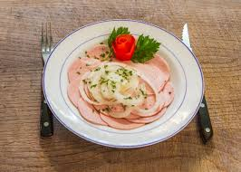

Wurstsalat

Description
Wurstsalat is a traditional German salad that literally translates to "sausage salad."
It's a popular dish in southern Germany, Austria, and Switzerland. Here's a
typical description:
- 400 g Fleischwurst (z.B. Lyoner oder Cervelat)
- 200 g Emmentaler Käse, in Scheiben geschnitten
- 100 g eingelegte Gewürzgurken, in Scheiben geschnitten
- 1 kleine rote Zwiebel, in Ringe geschnitten
Zutaten für das Dressing:
- Weinessig
- Sonnenblumenöl
- Salz
- Pfeffer
Zubereitung
-
Die Fleischwurst und den Käse in dünne Streifen schneiden.
-
Die Gewürzgurken in Scheiben und die Zwiebel in Ringe schneiden.
-
Alle Zutaten für das Dressing in einer Schüssel verrühren.
-
Die geschnittenen Zutaten in eine große Schüssel geben und mit dem Dressing vermischen.
Den Salat für 2-3 Stunden abgedeckt im Kühlschrank ziehen lassen, damit die Aromen
sich entfalten können.
- Kurz vor dem Servieren nochmal gut durchmischen.